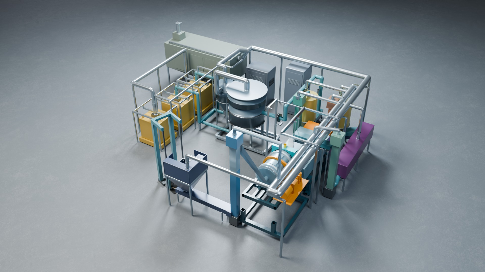
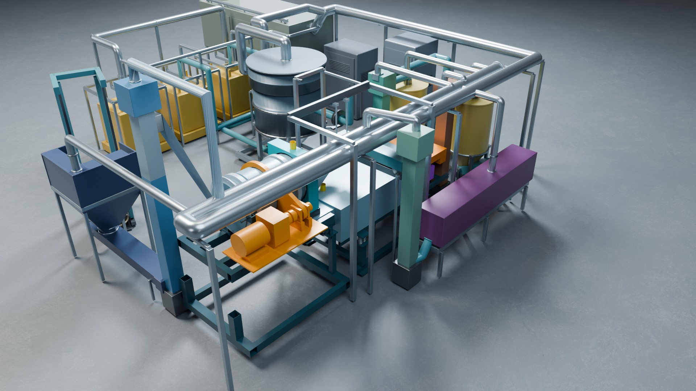

공정영상 R06 조립 모델 glTF 실시간 PBR · 시점·투어 정거장 도착 시 Cycles 실사 렌더로 전환 · 드래그 회전 · 설비 클릭 = 정보 · X 투시
토양환경·자원순환 / 방사능 오염 방제
원전에서 나온 방사능 오염 토양을 입도별로 분류·정화해 자체처분 물량을 최대로 확보합니다. 2차 폐기물을 만들지 않는 밀폐 건식 입도선별 공정을 설계했습니다.
처리 대상 · 1995년 고리 1호기 오염 토양 (제안 기준)
시설 용량 · 252 t 를 270시간에 처리 (제안 기준)
한국수력원자력 '방사능 오염 토양 분류 처리 용역' 제안(2026.05)과 건식선별 설비 설계 R3(2026-10-16) 기준입니다. 설계 검토값이며 제작 승인·수행 실적이 아닙니다. 에니스의 사업 역할(주관·참여)은 확인 후 기재합니다. 설비 3D 는 아래 디지털 트윈에서 볼 수 있습니다.


방사선 관리구역의 좁은 부지와 부족한 전기·용수 조건에서, 방사성 폐수·슬러지 같은 2차 폐기물을 만들지 않는 건식 정밀 입도선별을 채택합니다.
해쇄형 볼밀(D800×1200 드럼)로 흙덩이를 풀고 진동 2단 체(5 mm·1 mm 검토값)로 나눕니다. 굵은 입자는 회송해 다시 해쇄합니다.
1 mm 이하 미분은 공기분급기로 두 산물로 나눠 톤백에 담습니다. 입도별 오염 농도 차이를 이용해 자체처분 가능 물량을 늘립니다.
발생원 차폐 → 백필터 → 전기 집진 → 시설 차폐로 토양 분진 99.99 % 이상 포집을 목표로 합니다(제안 기준).